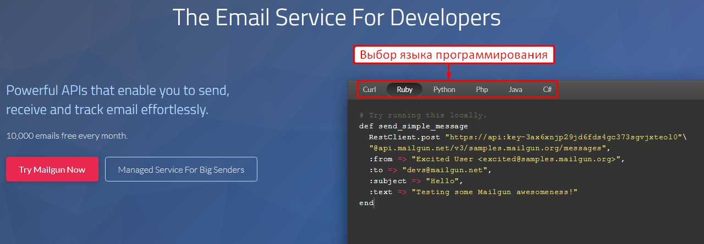
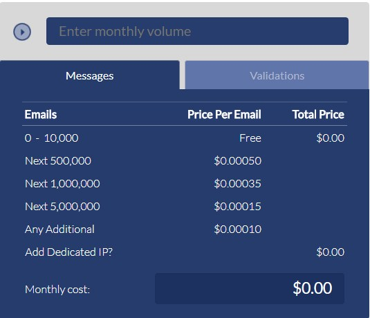
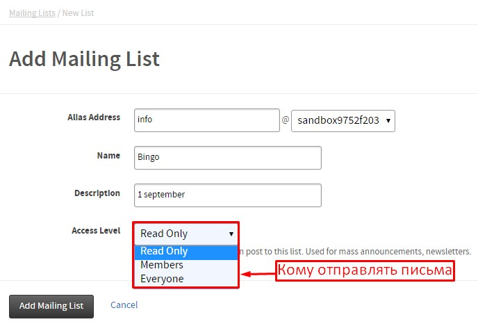
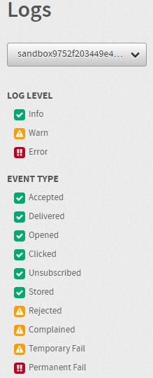

Mailgun.com — это сервис массовой рассылки писем для разработчиков. Функционал позволяет легко отправлять, получать, отслеживать электронные письма.

Преимущества по сравнению с конкурентами
- Сервису доверяют известные команды разработчиков — GitHub, heroku, lyft, shopify, slack, stripe.
- Мощный алгоритм отправки писем — простые SMTP і RESTful API позволяют быстро разослать почту, независимо от количества получателей (10 или 10 млн);
- Интеллектуальное распределение и сохранение входящих писем, отсеивание спама;
- Отслеживание и анализ состояния электронной почты через вебхуки;
- Проверка правильности введения электронной почты для увеличения конверсий.
Что получит клиент от работы с сервисом
- Простой и соответствующий стандартам API;
- 99,99% Uptime сервиса;
- Поддержку в режиме 24/7/365;
- 10 тыс. писем / мес. бесплатно, 500 тыс. по 0,0005$ / шт., 1 млн. по 0,00035$ / шт., 5 млн. по 0,00015$ / шт., остальные по 0,0001$ / шт.;

- Возможность интегрировать сервис в фреймворки за полчаса (включая регистрацию и тестирование);
- Официальная библиотека для PHP кода предоставляется GItHubом;
- Использование вебхуков для быстрого реагирования.
Отправка писем через Mailgun.com
Для начала работы с сервисом, нужно его протестировать. Для этого достаточно скопировать фрагмент подходящего кода и интегрировать его в код.
Далее, нужно добавить домен своего почтовика в меню «Domains». Рекомендуется использовать субдомен Mailgun, как «mg.mydomain.com». В этом случае сохранится возможность отправки сообщений с личной почты, например, «me@mydomain.com».
В меню «Mailing Lists» создаются списки рассылок по клиентской базе.

Настраивается 3 целевых группы получателей:
- Read only — список формируется из идентифицированных пользователей, используется для рассылки новостей, массовой информации;
- Members — список формируется из подписавшихся на рассылку;
- Everyone — список формируется из всех доступных адресов, при использовании этого режима рекомендовано подключать фильтрацию от спама для увеличения конверсии.
В меню «Logs» отображается актуальная статистика по письмах с выбранных доменов: принятые, отправленные, открытые, нажатия на ссылку, отписавшиеся, сохранённые, удалённые, пожаловались, временный сбой, постоянный сбой.

В меню «Routes» проверяются адреса пользователей, чтобы увидеть под какие фильтры он попадает. Здесь можно получить пример вебхука обработанного сообщения.
На вкладке «Reporting» в графическом виде отображается отчётность по всем доменам одновременно, их метками.
В «Campaigns» автоматически добавляются теги выбранного домена.
Мониторинг отказавшихся от рассылки, пожаловавшихся на контент письма или пользователей, удаливших его, происходит через «Suppressions».
Публичные и приватные API Keys размещены на странице «Email Validations». Здесь проводится проверка достоверности адреса.
Меню «Webhooks» создано для быстрого реагирования на возможные действия получателей или сообщения их почтовых серверов:
- Delivered Messages — доставленные сообщения, сервис получателя подтвердил, что письмо получено;
- Dropped Messages — недоставленные Mailgun по нескольким возможным причинам сообщения (отписка, жалоба, превышение установленного лимита);
- Hard Bounces — отказы от писем сервиса получателя, сообщающем что заданный адрес не существует;
- Spam Complaints — жалобы на рекламу, когда пользователь помечает письмо как спам;
- Unsubscribes — отказы от рассылки, всех сообщений, определённого тега или списка рассылок;
- Clicks — каждый раз, когда получатель нажимает на ссылки в ваших сообщениях;
- Opens — каждый раз, когда получатель открывает одно из ваших сообщений.
Здесь добавляются и тестируются Webhook URL.
Создать запрос в техподдержку можно прямо из сайта Mailgun.com. Документация по использованию сервиса предоставляется бесплатно, содержит инструкции, библиотеки, часто задаваемые вопросы, передовой опыт в рассылке.